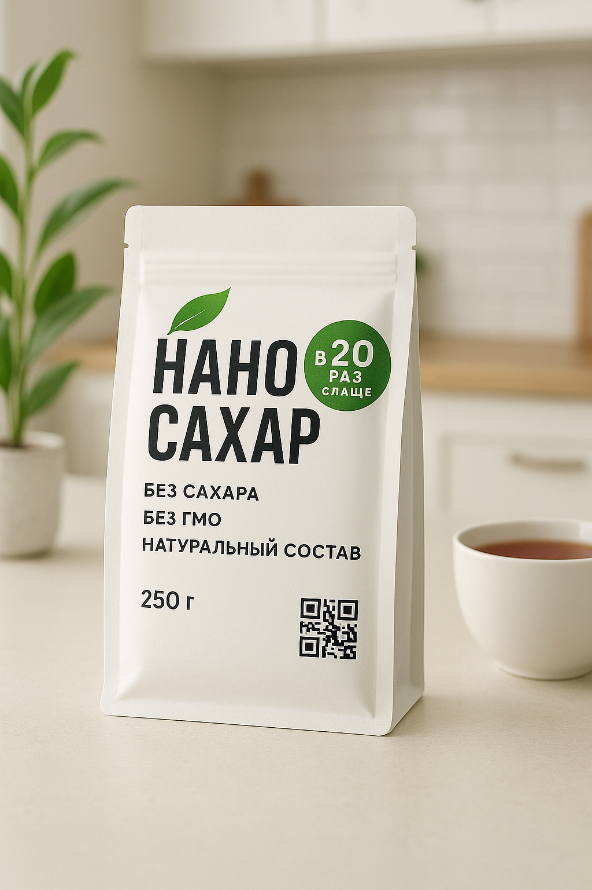

Проблема: сахар и метаболическое здоровье
Ежедневное потребление сахара превышает допустимую норму в 2–3 раза. Это напрямую связано с ростом:
- Инсулинорезистентности
- Сахарного диабета 2 типа
- Ожирения и метаболических нарушений
Nano-Sahar — инновационная замена сахара

- Не содержит сахара, но имеет сладкий вкус
- Полностью натуральный состав
- Безопасен при длительном применении
- Совместим с напитками, выпечкой и десертами
Почему выбирают Nano-Sahar
- Без калорий и гликемической нагрузки
- 100% натуральный
- Подходит диабетикам и людям на диете
Состав и свойства
- Эритрит — натуральный сахароспирт, не усваивается организмом
- Экстракт стевии — сладкий компонент без калорий
- Пребиотическая клетчатка — поддержка микрофлоры
Не вызывает кариеса, не влияет на инсулин, устойчив к нагреванию, не содержит аллергенов
Клиническая безопасность
Nano-Sahar прошёл клинические исследования (2024 г.):
- Не вызывал подъёма глюкозы
- Не оказывал негативного влияния на ЖКТ
- Поддерживал ощущение сладости
- Улучшал приверженность к диете
Контакты
ОсОО «Новалайф» — официальный дистрибьютор Nano-Sahar в Кыргызской Республике
г. Бишкек, 12-й мкр-н, д. 7, кв. 1
Телефон: +996 706 030 015
Email: info@novalife.kg
Сайт: nano-sahar.novalife.kg